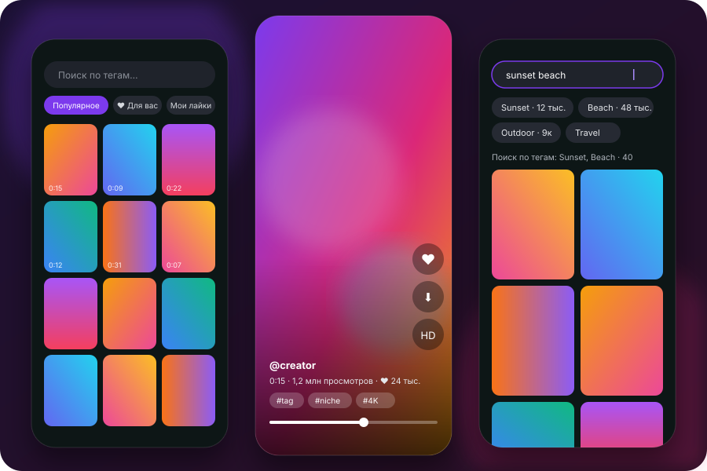

Короткие ролики. Без лишнего.
Short videos. Nothing extra.
Loopa — лёгкий открытый Android-просмотрщик для RedGIFs и Reddit. Лента без рекламы, вертикальная прокрутка на весь экран и видео, которое стартует сразу.
Loopa is a lightweight open-source Android viewer for RedGIFs and Reddit. An ad-free feed, full-screen vertical swiping and videos that start instantly.

Всё, что нужно — и ничего больше
Everything you need, nothing you don't
Маленькое приложение без рекламных SDK, которое делает одну вещь хорошо.
A small app without ad SDKs that does one thing well.
Без рекламы
No ads
Рекламные и продвигаемые ролики убираются из ленты.
Boosted and promoted videos are filtered out of the feed.
Мгновенный старт
Instant start
Соседние ролики грузятся заранее — видео начинается через полсекунды.
Neighbouring videos are preloaded, so playback starts in half a second.
Вертикальная лента
Vertical feed
Листайте на весь экран, как в коротких видео: перемотка, пауза, звук.
Full-screen swiping like short-video apps, with seek, pause and sound.
Качество «Авто»
Auto quality
HD на быстрой сети, SD на медленной — или закрепите вручную.
HD on fast networks, SD on slow ones — or pin it yourself.
Поиск и сортировка
Search & sorting
Теги с подсказками; релевантность, новые, лучшее, длинные или короткие, лайки, просмотры, рейтинг; фильтр по длительности и звуку.
Tag suggestions; relevance, newest, top, longest or shortest, likes, views, rating; duration and sound filters.
Плохая сеть — не помеха
Built for bad networks
Обрывы повторяются сами, видео продолжает, как только вернулась связь; на медленном канале — SD без подвисаний.
Drops are retried automatically and video resumes when the link is back; slow links get stall-free SD.
Ваш аккаунт
Your account
По желанию: «Для вас», лайки и «Мои лайки». Вход запоминается и продлевается сам.
Optional: “For you”, likes and “My likes”. Sign-in persists and renews itself.
Reddit в том же клиенте
Reddit in the same client
Подписки и любые сабреддиты, сортировки Reddit, видео со звуком — в той же ленте и плеере.
Your subscriptions and any subreddits, Reddit sorting, videos with sound — same feed and player.
Скачивание
Downloads
Долгое нажатие или кнопка в плеере — ролик в «Загрузки/Loopa»; видео Reddit — сразу со звуком.
Long-press or the player button saves to Downloads/Loopa; Reddit videos come with sound.
Установка за минуту
Install in a minute
Приложения нет в Google Play — его ставят из APK, как и большинство открытых клиентов.
The app isn't on Google Play — install it from the APK like most open-source clients.
Скачайте APK со страницы релизов на GitHub.
Download the APK from the GitHub releases page.
Откройте файл и разрешите установку из этого источника.
Open the file and allow installs from that source.
Готово. По желанию сверьте SHA-256 из файла SHA256SUMS.
Done. Optionally check the SHA-256 from SHA256SUMS.
32:9D:15:73:05:60:8C:5D:F2:1B:D7:7B:ED:3F:9C:70:DC:1C:38:D0:F9:44:A6:F8:C9:69:26:12:90:44:9C:84
Приватность по умолчанию
Private by default
Весь код открыт — проверить можно каждую строчку.
All code is open — every line can be checked.
- Никаких трекеров, аналитики и рекламных SDK.
- Только сами сервисы: API и видео-серверы RedGIFs и Reddit; окна входа — сами сайты redgifs.com и reddit.com.
- Пароль не видит: вы вводите его на странице сайта, сохраняется лишь токен сессии.
- No trackers, analytics or ad SDKs.
- Only the services themselves: RedGIFs and Reddit APIs and video servers; sign-in windows are redgifs.com and reddit.com.
- Never sees your password: you type it on the site; only the session token is kept.
- Данные остаются на телефоне, облачная копия отключена.
- Без посредников: запросы идут с телефона напрямую к сервисам, своего сервера у Loopa нет.
- Бережно к сервису: грузит только то, что вы смотрите.
- Data stays on your phone; cloud backup is disabled.
- No middleman: requests go straight from your phone to the services; Loopa has no server.
- Gentle on the service: it loads only what you watch.
FAQ
Это официальное приложение RedGIFs?
Is this an official RedGIFs app?
Нет. Loopa — независимый открытый проект, не связанный с RedGIFs и не одобренный ими. RedGIFs — товарный знак его владельцев.
No. Loopa is an independent open-source project, not affiliated with or endorsed by RedGIFs. RedGIFs is a trademark of its owners.
Есть ли приложение RedGIFs для Android?
Is there an app for RedGIFs on Android?
Loopa — бесплатное открытое неофициальное Android-приложение для RedGIFs (и видео Reddit). Ставится из APK со страницы релизов на GitHub, нужен Android 8.0 или новее.
Loopa is a free, open-source, unofficial Android app for RedGIFs (and Reddit videos). It is installed from the APK on the GitHub releases page; Android 8.0 or newer.
Как скачать видео с RedGIFs или Reddit на Android?
How do I download RedGIFs or Reddit videos on Android?
В Loopa — долгое нажатие на ролик в сетке или кнопка скачивания в плеере. Файлы попадают в «Загрузки/Loopa», видео Reddit сохраняются со звуком.
In Loopa, long-press a video in the grid or tap the download button in the player. Files go to Downloads/Loopa; Reddit videos are saved with sound.
Можно смотреть видео Reddit 18+ лентой, как в TikTok?
Can I watch Reddit NSFW videos in a TikTok-style feed?
Да. Loopa показывает видео из ваших подписок Reddit или любых сабреддитов вертикальной лентой на весь экран, со звуком. Контент 18+ — если он включён в настройках вашего аккаунта Reddit.
Yes. Loopa shows videos from your Reddit subscriptions or any subreddits in a full-screen vertical feed with sound. NSFW content appears if it is enabled in your Reddit account settings.
Есть ли в Loopa реклама или трекеры?
Does Loopa have ads or trackers?
Нет. Это независимый открытый проект (MIT), без рекламы, трекеров и аналитики.
No. It is an independent open-source project (MIT) with no ads, trackers or analytics.
Где хранятся ролики?
Where are the videos stored?
Нигде у нас: приложение показывает то, что сервис отдаёт любому браузеру, и кэширует просмотренное только на вашем телефоне.
Nowhere on our side: the app shows what the service serves to any browser and caches watched videos only on your phone.
На каких языках интерфейс?
Which languages does the app support?
Русский, английский, испанский, португальский, немецкий, французский, итальянский, турецкий, польский и украинский. По умолчанию — язык системы, сменить можно в меню 👤 → «Язык». Переводы лежат в i18n/strings.json — правки и новые языки приветствуются.
English, Spanish, Portuguese, German, French, Italian, Turkish, Polish, Ukrainian and Russian. It follows the system language by default; change it in the 👤 menu → “Language”. Translations live in i18n/strings.json — fixes and new languages are welcome.
Я правообладатель — куда писать?
I'm a rights holder — how do I reach you?
Откройте issue в репозитории на GitHub — вопрос будет рассмотрен.
Open an issue in the GitHub repository and it will be looked at.